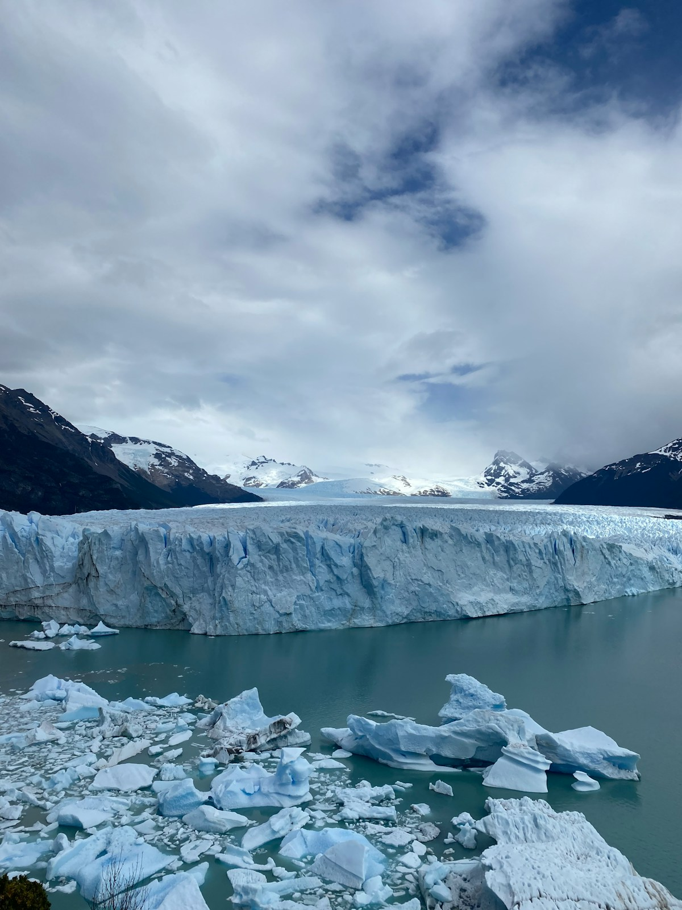
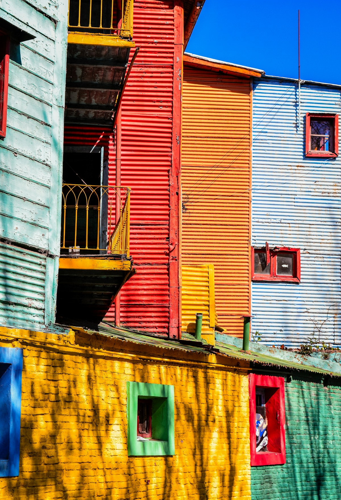
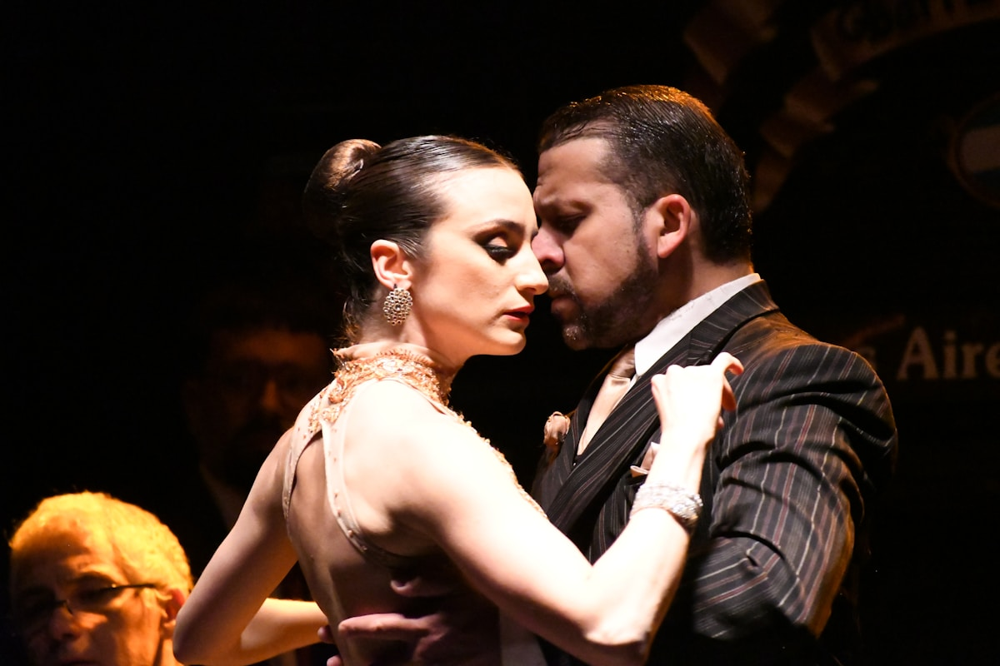
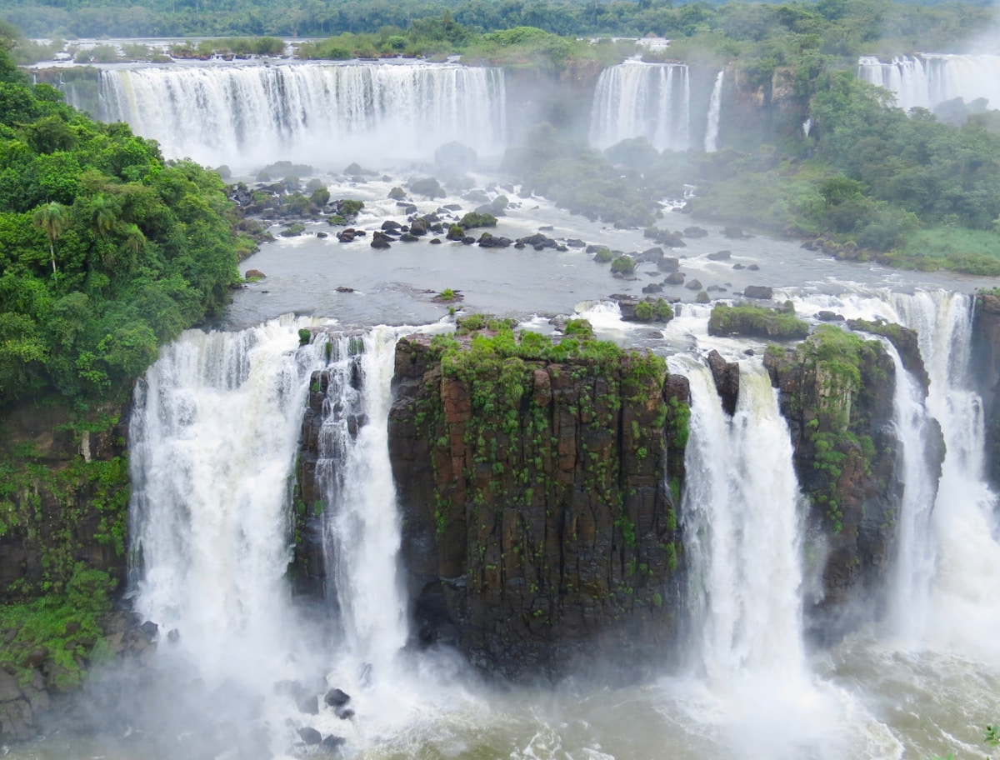
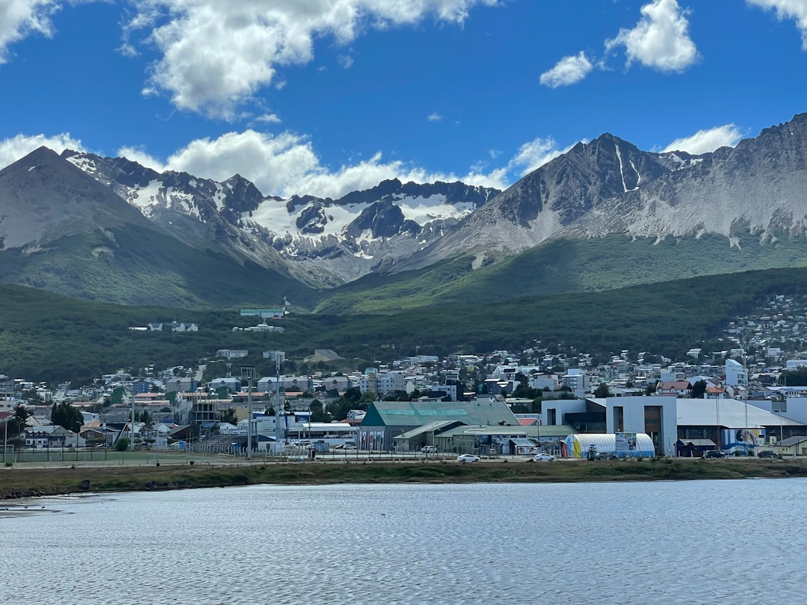
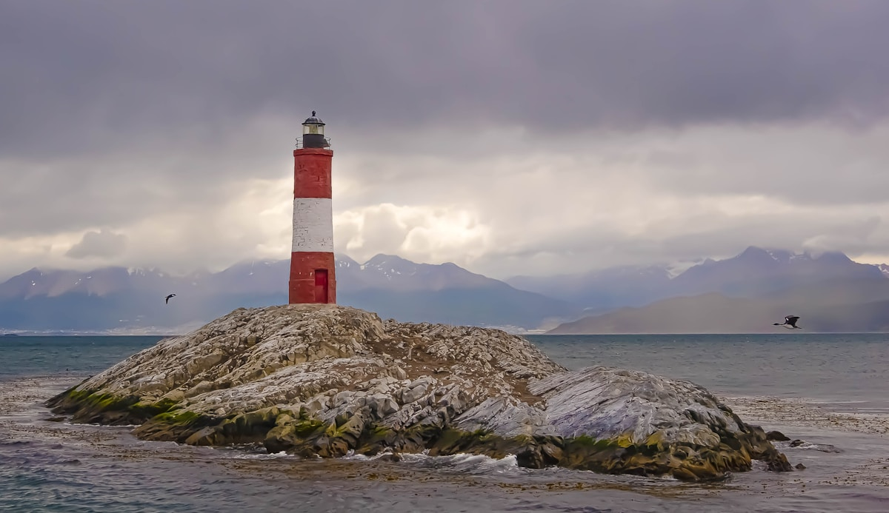
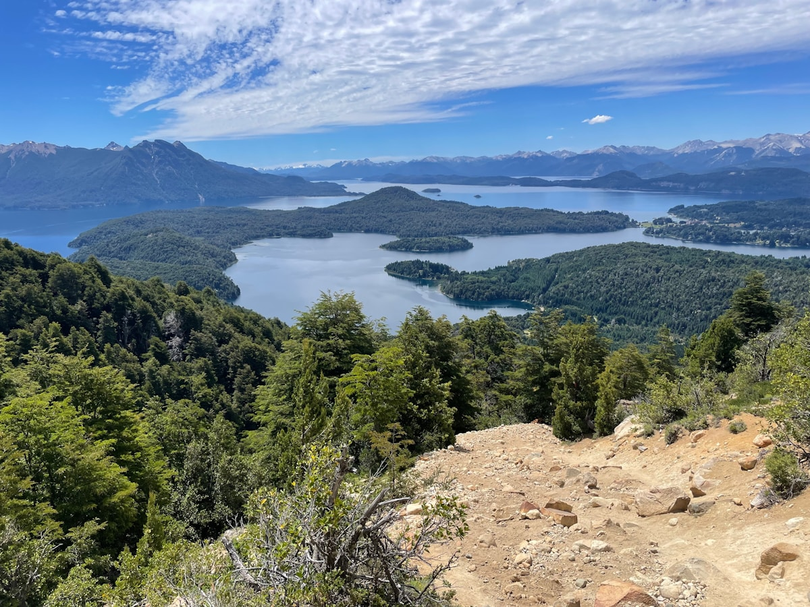
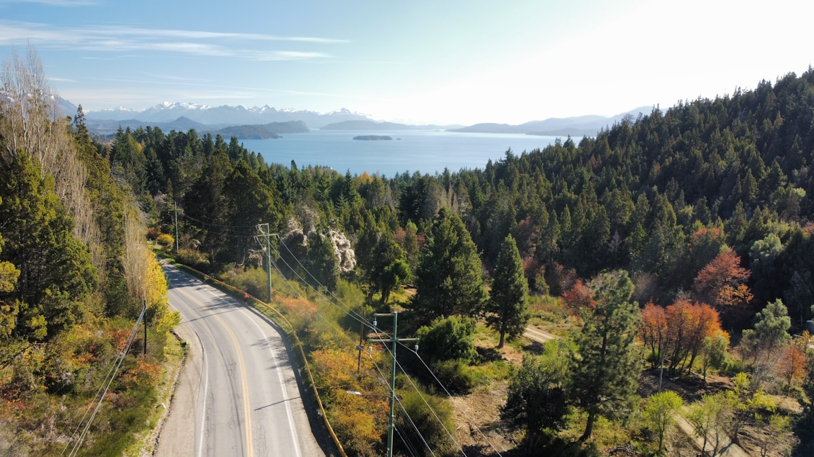

| 事项 | 结论 |
|---|---|
| 事项 | 结论 |
| 签证（最关键） | 中国护照持有效美签（B1/B2 等）或美绿卡可免签入境（2025-07-22 起生效，无需 AVE，最长 30 天）；无美签则需通过阿根廷使领馆办旅游签证 |
| 推荐方案 | 布宜诺斯艾利斯 3 天 → 伊瓜苏 2 天 → 埃尔卡拉法特 3 天 → 乌斯怀亚 3 天 → 巴里洛切 2 天 + 返程 |
| 返程约束 | 第 16 天从布宜诺斯艾利斯返京（转机约 28–30h）；巴里洛切回 BA 后衔接国际航班留 1 天缓冲 |
| 行程链 | 北京 → 布宜诺斯艾利斯 → 伊瓜苏 → 卡拉法特 → 乌斯怀亚 → 巴里洛切 → 北京 |
| 预算（人均） | 经济 20000–30000 ／ 标准 38000–55000 ／ 舒适 80000–120000（人民币） |
| 三件提前事 | ① 确认美签/申根是否在有效期内（免签前提）② 订巴塔哥尼亚国内航班（卡拉法特—乌斯怀亚段少）③ 冰川徒步/游船提前 1 个月订 |
| 季节提醒 | 11–3 月南半球夏季最适合：冰川阳光好、徒步可上冰；6–9 月冬季乌斯怀亚看雪、巴里洛切滑雪，但冰川徒步关闭 |
| 支付 | 比索现金为主 + Visa/Master 卡；阿根廷通胀高，换钱选「Blue Dollar」市场汇率或持牌兑换点，刷卡按官方汇率吃亏 |
以下为 16 天 15 晚的推荐节奏：从北部的亚热带伊瓜苏一路南下到世界尽头乌斯怀亚，再折回湖区巴里洛切，全程国内航班衔接。每日主景点 ≤2 个，冰川段留足 3 天给天气与徒步。
| 日期 | 行程 | 过夜地 | 主题 |
|---|---|---|---|
| D1 抵布宜诺斯艾利斯 | 北京✈布宜诺斯艾利斯（转机约 28h），入住市中心，五月广场初见 | 布宜诺斯艾利斯 | 抵达+倒时差 |
| D2 | 五月广场 → 方尖碑 → 女人桥 → 博卡区彩色街区 | 布宜诺斯艾利斯 | 城市名片 |
| D3 | 雷科莱塔墓地 → 圣特尔莫跳蚤市场 → 夜场探戈秀 | 布宜诺斯艾利斯 | 探戈与历史 |
| D4 | 布宜诺斯艾利斯✈伊瓜苏（约 2h），阿根廷侧公园 | 伊瓜苏 | 飞伊瓜苏 |
| D5 | 魔鬼咽喉栈道 + 上/下环线，傍晚✈卡拉法特（经 BA） | 埃尔卡拉法特 | 魔鬼咽喉日 |
| D6 | 莫雷诺冰川观景栈道：百万年冰墙 + 冰崩现场 | 埃尔卡拉法特 | 冰川全景 |
| D7 | 莫雷诺冰川迷你徒步/游船日（Minitrekking） | 埃尔卡拉法特 | 冰川徒步 |
| D8 | 卡拉法特✈乌斯怀亚（约 1h40min），市区漫步 | 乌斯怀亚 | 飞世界尽头 |
| D9 | 火地岛国家公园：世界尽头火车 + 拉帕塔亚湾 | 乌斯怀亚 | 火地岛日 |
| D10 | 比格尔海峡游船：海狮岛 + 世界尽头灯塔 + 企鹅 | 乌斯怀亚 | 海峡游船 |
| D11 | 乌斯怀亚机动（世界尽头邮局/冰川快车）→ ✈巴里洛切 | 巴里洛切 | 转场湖区 |
| D12 | 小环线 Circuito Chico + 纳韦尔瓦皮湖游船 | 巴里洛切 | 湖区环线 |
| D13 | 七湖之路一日或卡特德拉尔山缆车 | 巴里洛切 | 七湖/雪山 |
| D14 | 巴里洛切✈布宜诺斯艾利斯，傍晚圣特尔莫再逛 | 布宜诺斯艾利斯 | 回首都 |
| D15 | 布宜诺斯艾利斯购物日：皮具、牛排、葡萄酒 | 布宜诺斯艾利斯 | 购物收尾 |
| D16 返程 | 布宜诺斯艾利斯✈北京（转机约 28h） | — | 返程日 |
以下为 16 天全程的逐小时执行时间线，可当作「当天打开照着走」的清单。标注 ※ 的可选项视体力与天气取舍。
| 时间 | 事项 |
|---|---|
| 13:00–次日18:00 | 北京✈布宜诺斯艾利斯（无直飞，经迪拜/伊斯坦布尔/马德里转机，总程约 28–30h） |
| 18:30–20:00 | 入住圣特尔莫/雷科莱塔一带酒店（老城氛围 + 安全），休整 |
| 20:00–21:30 | 五月广场（Plaza de Mayo，免费）：总统府「玫瑰宫」与五月金字塔，阿根廷政治心脏 |
| 21:30 | 晚餐：牛排馆 bife de chorizo + 马尔贝克红酒，早点休息倒时差 |
| 时间 | 事项 |
|---|---|
| 08:30–10:00 | 方尖碑 + 七月九日大道（免费）：世界最宽大道（140m），科隆剧院外观 |
| 10:00–12:00 | 博卡区（La Boca，免费）：彩色铁皮房 + 卡米尼托街，博卡青年队主场外观 |
| 12:00–13:00 | 午餐：博卡区 parrilla 烤肉或肉馅饼 empanada |
| 13:30–15:30 | 女人桥 + 马德罗港（免费）：当代艺术区 PUENTE DE LA MUJER，日落光影最佳 |
| 16:00–18:00 | 圣特尔莫主街（Defensa 街）：古董店、探戈街头艺人、café 老店 |
| 19:30 | 晚餐：牛排馆 + 阿根廷红酒，晚上可以看一场小剧场探戈表演 |
| 时间 | 事项 |
|---|---|
| 08:30–11:00 | 雷科莱塔国家公墓（免费）：大理石墓园迷宫，贝隆夫人墓必看 |
| 11:00–12:30 | 雷科莱塔文化中心（免费外观/展览）：曾是修道院，玻璃穹顶网红拍照地 |
| 12:30–13:30 | 午餐：Parilla 烤肉套餐（阿根廷人均最实惠的吃法） |
| 14:00–16:30 | 圣特尔莫跳蚤市场（周日下午最热闹）：古董银器、皮具、探戈唱片，砍价空间大 |
| 17:00–18:30 | 自由活动：Florería Atlántico 地下酒吧 / 拉美艺术博物馆 MALBA |
| 20:00–23:00 | 夜场探戈秀（含晚餐约 USD 60–120）：La Ventana / Rojo Tango 等经典场，专业舞者表演 |
| 时间 | 事项 |
|---|---|
| 08:00–10:00 | 布宜诺斯艾利斯✈伊瓜苏（阿根廷国内机场 IGR，约 2h，阿根廷航空/Aerolíneas） |
| 10:30–11:00 | 入住伊瓜苏港（Puerto Iguazú）酒店，就近午餐 |
| 11:30–16:30 | 伊瓜苏国家公园阿根廷侧（外国成人 AR$60,000，官网购票）：先走上/下环线热身，看瀑布群的侧面与底部 |
| 17:30 | 返回酒店，晚餐 empanada + 阿根廷啤酒 |
| 时间 | 事项 |
|---|---|
| 08:00–09:00 | 公园开门即入园（避开旅行团），乘丛林小火车到魔鬼咽喉站 |
| 09:00–11:30 | 魔鬼咽喉栈道（Garganta del Diablo）：1.1km 栈道直通瀑布中央，水汽如暴雨，彩虹常伴 |
| 11:30–13:00 | 上环线补完 + 园内午餐（阿根廷烧烤三明治） |
| 13:00–15:00 | 下环线回程，顺路看 Coatí 长鼻浣熊 |
| 16:00–22:30 | 伊瓜苏✈布宜诺斯艾利斯（约 2h）→ 转机✈埃尔卡拉法特（约 3h20min） |
| 22:30 | 入住卡拉法特酒店，巴塔哥尼亚夜风已冷 |
| 时间 | 事项 |
|---|---|
| 08:30 | 旅行社大巴出发（约 1h20min 车程）到洛斯格拉西亚雷斯国家公园（门票 AR$45,000） |
| 10:00–13:00 | 莫雷诺冰川观景栈道（免费步道）：数公里栈道正对 60m 高的冰墙，等一场冰崩（大块冰坠湖，巨响震撼） |
| 13:00–14:00 | 园区餐厅午餐（热汤 + 三明治） |
| 14:00–16:00 | 栈道另一侧近距离视角：看冰川前沿的蓝洞与裂隙 |
| 16:30–17:30 | 返程，晚上卡拉法特小镇吃羊肉（cordero）晚餐 |
| 时间 | 事项 |
|---|---|
| 07:30 | Hielo & Aventura 集合出发（提前 1 个月官网订，18–65 岁） |
| 09:30–12:00 | 迷你徒步 Minitrekking（约 AR$320,000 起）：穿冰爪走上冰川边缘 1.5h，导游讲解冰洞与裂隙 |
| 12:00–13:00 | 湖岸午餐（三明治 + 热茶） |
| 13:00–15:00 | 冰川前沿巡航（可选 Safari Náutico 游船 AR$64,000）：从湖面仰望 60m 冰墙 |
| 16:00–17:30 | 返卡拉法特，晚餐冰川湖鳟鱼（trout） |
| 时间 | 事项 |
|---|---|
| 08:00–09:40 | 卡拉法特✈乌斯怀亚（约 1h40min，Aerolíneas 每周 3–4 班，提前订） |
| 10:00–12:00 | 入住酒店，乌斯怀亚市区漫步（免费）：世界尽头的标志牌 + 海港看邮轮 |
| 12:00–13:00 | 午餐：帝王蟹（centolla，当地名物） |
| 13:30–16:30 | 世界尽头博物馆群（海洋博物馆/监狱博物馆，门票约 AR$10,000–15,000）：南极探险史 + 火地岛历史 |
| 18:00 | 晚餐 + 早睡，为次日火地岛公园养足体力 |
| 时间 | 事项 |
|---|---|
| 08:30 | 乘旅游大巴/租车前往火地岛国家公园（门票约 AR$45,000，现金可付） |
| 09:30–11:00 | 世界尽头小火车（Ferrocarril Austral Fueguino，约 USD 60–70）：前罪犯运输线改的蒸汽列车，穿原始森林 |
| 11:00–13:00 | 拉帕塔亚湾（Bahía Lapataia）：泛美公路 3 号路终点牌 + 湖湾徒步 |
| 13:00–14:00 | 公园内午餐（热狗 + 热咖啡） |
| 14:00–16:30 | 恩塞纳达湾步道：远望安第斯山与麦哲伦海峡，偶遇狐狸与啄木鸟 |
| 17:00 | 返乌斯怀亚，晚餐：火地岛特色烤肉 |
| 时间 | 事项 |
|---|---|
| 09:00 | 乌斯怀亚港登船（提前 1–2 天码头/网上订，船票约 USD 90–120） |
| 09:30–12:30 | 比格尔海峡巡航：海狮岛（Isla de los Lobos）、鸟岛、企鹅群近观 |
| 12:30–13:30 | 午餐：船上简餐或回港吃帝王蟹 |
| 14:00–16:00 | 世界尽头灯塔（Les Eclaireurs Lighthouse）：红白灯塔地标，打卡南美最南灯塔 |
| 16:30–18:00 | 企鹅岛（Pinguinera，夏季可选）：麦哲伦企鹅栖息地近距离观察 |
| 19:00 | 晚餐：乌斯怀亚海鲜 + 阿根廷白葡萄酒 |
| 时间 | 事项 |
|---|---|
| 08:30–10:30 | 自由活动：世界尽头邮局寄明信片 / 冰川快车（Glaciar Martial）缆车或市区采购 |
| 10:30–11:30 | 退房 + 午餐 |
| 12:00–16:30 | 乌斯怀亚✈巴里洛切（约 2h30min，多数经布宜诺斯艾利斯转机，总程 5–6h） |
| 17:00 | 入住巴里洛切市区（Mitre 街巧克力店云集），傍晚湖边看日落 |
| 19:00 | 晚餐：湖区鳟鱼 + 精酿啤酒 |
| 时间 | 事项 |
|---|---|
| 08:30 | 租车/包车出发走小环线（Circuito Chico，24km 环线） |
| 09:30–11:00 | 坎帕纳里奥山（Campanario）缆车：山顶 360° 俯瞰群岛与雪山（缆车约 USD 20） |
| 11:00–12:30 | Llao Llao 酒店 + 圣爱德华教堂（免费）：湖边地标机位 |
| 12:30–13:30 | 午餐：湖畔餐厅阿根廷烧烤 |
| 14:00–17:00 | 纳韦尔瓦皮湖游船（Puerto Pañuelo 出发）：Victoria 岛 / 黑冰川线，湖水呈翡翠色 |
| 18:30 | 晚餐：巴里洛切巧克力火锅 + 牛排 |
| 时间 | 事项 |
|---|---|
| 08:00 | 出发走七湖之路（Ruta de los Siete Lagos，110km，沿 40 号公路到圣马丁德洛斯安第斯） |
| 09:00–13:00 | 沿路 7 个冰湖逐个停车：翡翠湖、马基林科湖、拉卡尔湖等，森林+雪山+湖泊三重景观 |
| 13:00–14:00 | 圣马丁德洛斯安第斯小镇午餐（湖区小镇氛围） |
| 14:30–18:00 | 回程另一条观景路，或改去卡特德拉尔山（Cerro Catedral）缆车看雪山全景（夏季半价） |
| 19:00 | 晚餐：巴里洛切羊肉 + 甜点巧克力 |
| 时间 | 事项 |
|---|---|
| 08:30–10:30 | 巴里洛切✈布宜诺斯艾利斯（约 2h，多班直飞） |
| 11:00–13:00 | 入住酒店，马德罗港 + 女人桥白天版（港口区现代建筑 + 河边咖啡） |
| 13:00–14:00 | 午餐：港口区 parrilla |
| 14:30–17:30 | 圣特尔莫再逛：二手市场 + 古董街 + 探戈海报店 |
| 19:00 | 晚餐：一顿正经的阿根廷牛排收官 |
| 时间 | 事项 |
|---|---|
| 08:30–11:00 | 雷科莱塔街区购物：阿根廷皮具（皮质夹克/腰带）、羊驼毛围巾、马黛茶 |
| 11:00–13:00 | 葡萄酒商店：马尔贝克/多伦特斯白葡（阿根廷红酒世界闻名，机场价约超市 1.5 倍） |
| 13:00–14:00 | 午餐：empanada + 番茄炖肉 |
| 14:30–17:30 | 自由安排：MALBA 美术馆 / 国家美术博物馆 / 书店咖啡（布宜诺斯艾利斯书店密度全球前列） |
| 19:00 | 晚餐：最后一顿烤肉 + 探戈表演（可选） |
| 时间 | 事项 |
|---|---|
| 08:00–10:00 | 退房，打车到埃塞萨国际机场（EZE），提前 3h 值机 |
| 12:00–次日20:00 | 布宜诺斯艾利斯✈北京（转机 28–30h，经迪拜/伊斯坦布尔/马德里），机上跨日 |
| 20:00 | 抵达北京，结束 16 天阿根廷之旅 |
必去（必去）/ 顺路（顺路）/ 可跳过（可跳过）。

必去
必去
必去
必去
必去
必去
顺路图片为 Unsplash 主题图（莫雷诺冰川、博卡区、探戈、伊瓜苏、火地岛、比格尔海峡、巴里洛切湖区、雪山等均为阿根廷实景），用于页面配图。更多免费景点：五月广场、方尖碑、女人桥、雷科莱塔公墓、圣特尔莫跳蚤市场、七湖之路沿途。
点击左侧节点可在地图上定位；点击地图 marker 会高亮对应节点。坐标为 WGS-84 转 GCJ-02 纠偏后标注。
以下为单人、不含购物的估算，人民币计价；出发地基准北京。汇率按 1 人民币 ≈ 135 阿根廷比索估算。往返国际机票按淡季转机 6000–10000 元计；巴塔哥尼亚国内段 5 程 + 冰川徒步是全行程最贵项。
| 项目 | 经济（20000–30000） | 标准（38000–55000） | 舒适（80000–120000） |
|---|---|---|---|
| 往返机票 | 转机 6000–9000 | 好时段转机 10000–14000 | 灵活舱/商务 18000–25000 |
| 住宿（15 晚） | 民宿/青旅 250–400/晚 | 三星+巴塔哥尼亚 500–800/晚 | 湖区度假村 1800–2800/晚 |
| 国内交通（5 程） | 提前 1 个月订 3500–5000 | 正价 5500–7500 | 灵活时段 10000–15000 |
| 门票与活动 | 公园门票 1200–2000 | 含迷你徒步 4500–6000 | Big Ice+游船+直升机 9000–14000 |
| 餐饮（16 天） | 街头小吃+烤肉 3000–4500 | 正常下馆子 5500–8000 | 牛排馆/米其林 12000–20000 |
冬季乌斯怀亚降雪、巴里洛切进入南半球最佳滑雪季（卡特德拉尔山 6–9 月开板），冰川迷你徒步关闭但可乘船近距离看冰；乌斯怀亚雪中世界尽头 + 巴里洛切滑雪 + 布宜诺斯艾利斯看一场「阿根廷式冬天」。冬季机票酒店便宜 30–40%，但南部山区航班易受天气延误。
乌斯怀亚是南极游轮第一大出发港（11–3 月），行程结束后可在乌斯怀亚加 6–8 天南极航程（USD 3000–9000，跨德雷克海峡，含冰川/企鹅/观鲸）；预算与天数都大幅上调，适合把阿根廷主线当「南极前菜」。乌斯怀亚—南极的船需提前 6 个月以上预订。
| 方式 | 时长 | 参考价 | 备注 |
|---|---|---|---|
| 北京⇄布宜诺斯艾利斯（转机） | 约 28–30h（1–2 停） | 往返 6000–14000 元 | 经迪拜/伊斯坦布尔/马德里，阿联酋/土航/国航等，无直飞 |
| 布宜诺斯艾利斯✈伊瓜苏 | 约 2h | 单程 700–1200 元 | 阿根廷航空 Aerolíneas，每天多班 |
| 布宜诺斯艾利斯✈埃尔卡拉法特 | 约 3h20min | 单程 900–1500 元 | Aerolíneas/Flybondi，夏季航班多 |
| 埃尔卡拉法特✈乌斯怀亚 | 约 1h40min | 单程 1000–1600 元 | 每周 3–4 班，至少提前 1 个月订 |
| 乌斯怀亚✈巴里洛切 | 约 2h30min（多经 BA） | 单程 1200–2000 元 | 直飞每周几班，多数经布宜转机 |
| 巴里洛切✈布宜诺斯艾利斯 | 约 2h | 单程 700–1100 元 | 多班直飞，提前订 |
| 区域 | 价格/晚 | 优点 | 短板 |
|---|---|---|---|
| 布宜诺斯艾利斯·圣特尔莫 | 经济 250–400 / 标准 500–900 | 老城氛围，探戈与跳蚤市场 | 夜生活吵，老楼隔音一般 |
| 布宜诺斯艾利斯·雷科莱塔 | 标准 600–1000 | 安全高档，公墓与文化中心近 | 价格偏高 |
| 伊瓜苏港 | 经济 250–400 / 标准 450–700 | 离公园近，小镇物价低 | 旺季房紧，无亮点 |
| 埃尔卡拉法特 | 经济 300–500 / 标准 600–1000 | 冰川基地，羊肉美食 | 夏季贵，需提前订 |
| 乌斯怀亚 | 经济 350–550 / 标准 700–1200 | 海港风情，南极门户 | 风大，房源旺季紧张 |
| 巴里洛切市区 | 经济 300–500 / 标准 600–1000 | 湖区度假风，巧克力街 | 滑雪季涨价翻倍 |